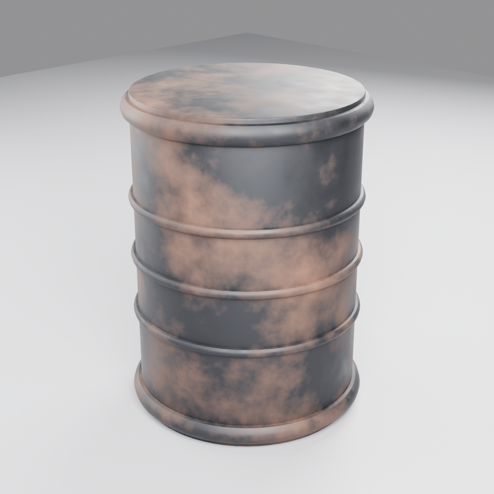

Iron Barrel preview
железная бочка · id: iron_barrel
Стальная бочка-«нефтянка» (200 л), стиль survival — состаренная сталь с пятнами ржавчины. Демо-проп. Без UV / LOD / бейка / экспорта в UE.
- Status
- preview
- Faces
- 4162 (база 3906, до модификаторов)
- Tris
- 8444
- BBox, м
- 0.646 × 0.646 × 0.88
- Material
M_IronBarrel_Aged- Source
iron_barrel/iron_barrel_v1.blend